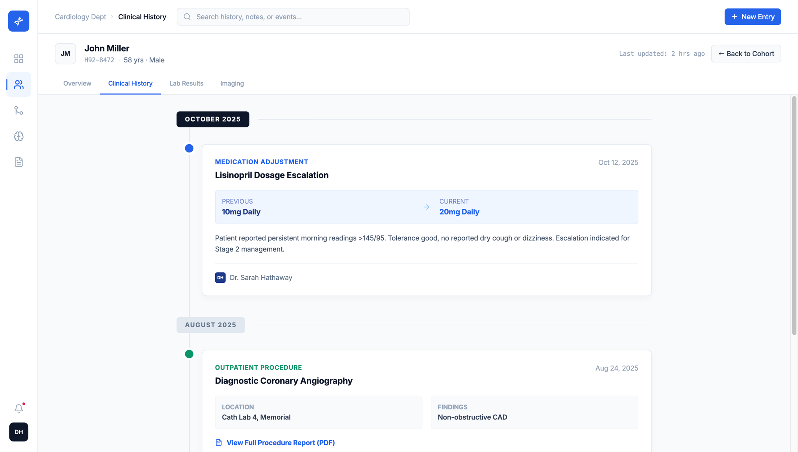
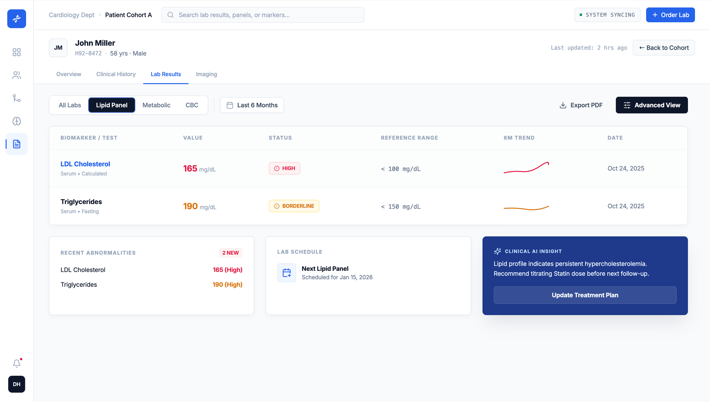
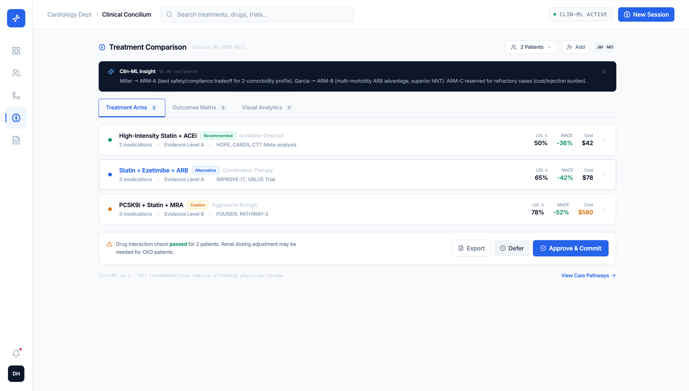
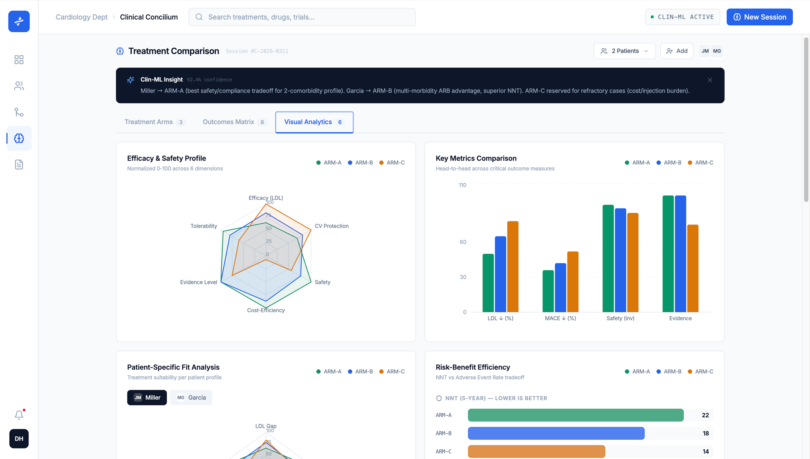
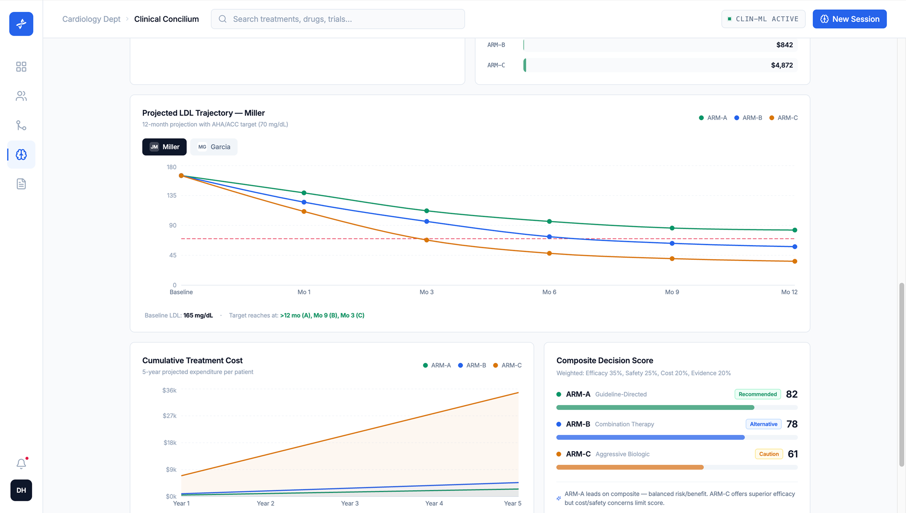
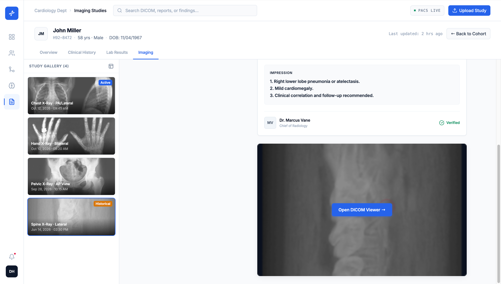
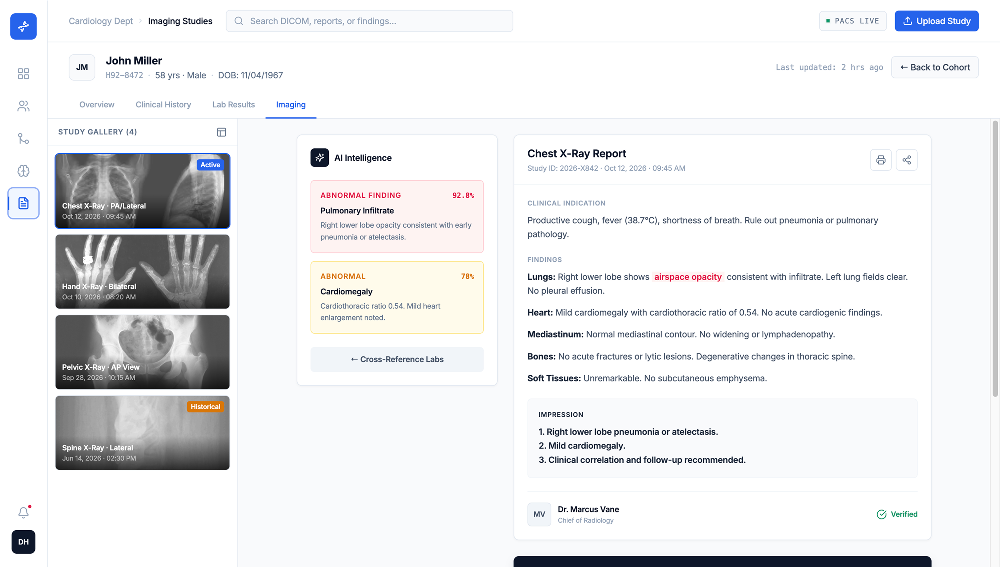

A decision a cardiologist makes in minutes, supported by data that lives in five systems.
.Choosing between treatment regimens for a high-risk cardiac patient is one of the highest-stakes, most evidence-dense decisions in medicine. Yet the inputs — labs, vitals, prior imaging, comorbidities, guideline thresholds, cost — are fragmented across the EHR, the lab system, PACS, and the clinician's own memory of the literature.
Concilium is a self-directed concept that asks a focused question: what would the decision surface look like if it were designed for the moment of choosing, rather than for storing records? I designed the information architecture, the interface system, and a working prototype of the core flow.
AI is a second reader. Every model output shows its confidence and its evidence, and the clinician commits the decision — never the machine.
Not "how do we show more data?" — but "how do we collapse five systems into one defensible choice?"
The evidence exists. It just never sits in one place at the same time.
To weigh two regimens, a clinician tabs between the chart, the lab portal, the imaging viewer and a guideline PDF — holding the comparison together in their head. Nothing in the toolchain is built to compare. The cost is cognitive load at exactly the wrong moment.
Structured around the clinician's path: triage → understand → decide.
The whole product is three moves. Triage the cohort to find who needs attention. Open one patient to understand them across history, labs and imaging. Then move into the decision engine. Every screen makes the next move obvious — the patient record uses one tabbed spine so labs, imaging and history never become separate destinations.
Triage the cohort
Risk score, vitals and 7-day trend, sorted so the critical few surface first.
Understand the patient
One spine — Overview, History, Labs, Imaging — so the story stays continuous.
Decide together
Compare regimens side by side, with evidence and an AI second read.


Fig. 02 — One patient, two tabs of the same spine: history and labs stay continuous, with AI surfacing the pattern
The Concilium: three regimens, one comparison, a defensible choice.
This is the heart of the product. The clinician loads two patients and three candidate regimens; Concilium lays them out as treatment arms and scores each against the metrics that matter — LDL reduction, MACE risk, NNT, adverse events, cost, evidence grade. The AI proposes a per-patient match and shows its confidence; the clinician approves and commits. No metric is hidden behind a model.

Fig. 03 — The Concilium: three arms with evidence grade and per-metric outcomes, a confidence-scored AI match, and a human commit


Fig. 04 — The same three arms, read three ways: normalized profile, projected LDL trajectory, and a weighted composite score
A dark reading room, with the model's findings flagged — not hidden.
Imaging gets its own visual register: a focused dark viewer for the study, and a light measurement rail beside it. The AI assessment sits adjacent — it can flag a finding and quantify it, but it labels its confidence and routes everything to a human "Finalize Report." The clinician reads; the model assists.

Fig. 05 — Imaging: a focused dark viewer, a light measurement rail, AI findings that route to a human sign-off

Fig. 06 — The study report: AI ranks candidate findings by confidence; the named radiologist verifies and signs
One system, so a number means the same thing everywhere.
In a clinical tool, an inconsistent status colour isn't an aesthetic flaw — it's a safety risk. I defined a tight token set: a single status scale (critical / borderline / stable), one blue for action, a navy reserved exclusively for AI and dark reading contexts, and a monospace register for machine-emitted metadata. Built once, applied to every surface above.
One primary action per screen. Destructive and AI-committing actions always carry an explicit verb — never just "OK".
Fig. 07 — The token set behind every screen: status, action, AI, and machine metadata
What a decision surface earns you.
As a self-directed concept, Concilium's value is in the argument it makes, not in shipped metrics. Designing it clarified three things I'd carry into the real version: comparison is a first-class UI primitive, not a feature; AI belongs on the surface with its evidence, never behind a recommendation; and a clinical system lives or dies on the discipline of its status language.
into one decision view
confidence and source
the model assists
All patient names, identifiers and clinical values shown are fictional, generated for this concept. Outcome statements describe design intent, not measured results.